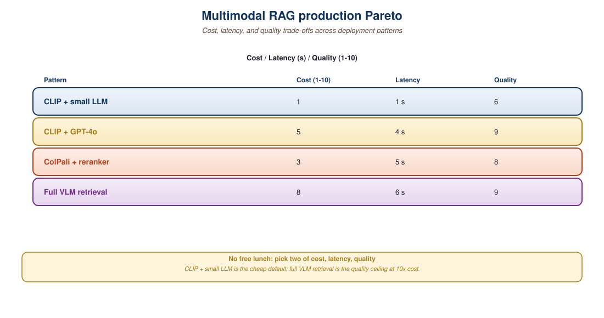

"Half of production ML is picking the right model for the workload. The other half is admitting you picked wrong and switching."
RAG, Production-Tested AI Agent
Shipping a multimodal-reasoning product means picking among a dozen possible models, two or three retrieval patterns, and a half-dozen orchestration strategies, then proving the choice survives real load. This closing section of the chapter (and of Part VII's RAG arc) consolidates the practical guidance: the cost-latency-quality matrix for 2026 frontier and open multimodal models, the model-selection rubric for common product shapes, observability requirements, and the patterns that consistently fail when scaled. Treat this as the playbook for taking everything from Chapters 31, 37, 38, and 42 into production.
Prerequisites
This section assumes the multimodal RAG patterns from Section 33.2 and Section 33.3, and the production-deployment recipes from Section 32.5. LLM observability and tracing tools are covered in detail later in the book.

33.4.1 The Three Product Shapes
The honest answer to "which model should I use for multimodal production" is almost never the latest one. Teams that benchmark a year-old GPT-4o-mini against the newest Gemini variant often find the cost-quality frontier favors the older model by a wide margin, and quietly defer the upgrade until next quarter.
Most multimodal-reasoning products in 2026 fall into one of three shapes, each with distinct constraints:
- Conversational assistant: voice or text agent that occasionally handles images. Latency is the hard constraint (sub-second feels conversational, multi-second feels broken). Patterns: native realtime omni model (Section 39.3) with optional RAG callouts.
- Document QA: user uploads or selects a document, asks questions. Latency tolerance is higher (2 to 5 seconds is acceptable). Quality matters more than cost. Patterns: ColPali-family page-as-image RAG (ColPali treats each PDF page as a single image and embeds it directly with a multimodal encoder, skipping text extraction) plus VLM generation.
- Visual search and recommendation: text or image query against a large catalog. Latency strict (under 200 ms typical). Quality is "good enough" rather than "perfect". Patterns: pure joint embedding retrieval (Section 33.1), often without a generative step.
Identifying which shape your product fits is the first decision. Most multi-feature products are combinations: a customer-support agent might be conversational (assistant shape) with embedded document QA and visual product search.
33.4.2 Model Selection Matrix
| Use Case | Primary Model | Retrieval Stack | Cost per Query (approx) | p95 Latency |
|---|---|---|---|---|
| Conversational voice | GPT-4o Realtime / Gemini Live | Inline if needed | $0.05 / min | 0.4 to 0.8 s |
| Visual Q&A (general) | Gemini 2.5 Pro / GPT-4o | None (direct) | $0.015 | 1 to 2 s |
| Internal document QA | Qwen2-VL-72B / Gemini 2.5 Pro | ColPali / ColQwen | $0.04 to 0.10 | 2 to 4 s |
| Catalog visual search | None (retrieval only) | SigLIP 2 + Qdrant | $0.0005 | 50 to 150 ms |
| Video summarization | Gemini 2.5 Pro (long context) | Whisper transcripts | $0.20 / 10-min clip | 10 to 30 s |
| Image generation chat | GPT-4o / Gemini 2.5 Pro | None typically | $0.04 per image | 3 to 8 s |
| On-premises / regulated | Llama-4-Omni / Qwen2-VL | Self-hosted | ~$0.005 amortized | 1 to 4 s |
| Edge / mobile | Qwen2-VL-2B / SmolVLM | None | Battery / device | 0.5 to 2 s |
33.4.3 "The Cheapest Thing That Works"
A useful 2026 design heuristic: start with the cheapest model that plausibly meets quality, ship it, then upgrade only where measurements show failures. Concretely:
- Start with GPT-4o-mini or Gemini 2.0 Flash: $0.15 to $0.30 per million input tokens, sub-second TTFB, multimodal. Adequate for 60 to 80% of production multimodal queries.
- Upgrade to GPT-4o or Gemini 2.5 Pro for the 20 to 40% of queries where mini variants fail spot checks.
- Add retrieval only when hallucination spot-checks show knowledge gaps that retrieval can fill.
- Move to agentic search only for the long tail of complex multi-hop queries.
The opposite path, starting with the most capable agentic stack and trying to optimize cost downward, tends to produce expensive systems with no clear ablation map (an "ablation map" is the table of "what fails when each component is removed", the diagnostic that tells you which parts are pulling weight). Premature optimization in the cost direction is preferable to premature complexity in the capability direction.
GPT-4o-mini and Gemini 2.0 Flash are 25 to 50x cheaper than their flagship siblings and handle the vast majority of common multimodal tasks at sufficient quality. Many production teams default to flagship models on every query "to be safe" and end up paying 30 to 50x what they need to. Audit your production traffic: if mini variants pass spot checks on 80% of queries, routing the obvious queries to mini saves 25 to 50x on those queries with no quality loss.
33.4.4 Observability Requirements
Multimodal production systems need observability beyond what text-only systems require. The reason is that the silent failure modes are different: a text-only chat that returns gibberish is noised in latency or token-count metrics; a multimodal pipeline can quietly degrade because the image encoder routed a query to a cheaper detail level, or because OCR ran on a rotated document and produced low-confidence text the model still ran on. The minimum five signals below are the smallest set that catches these.
- Per-modality token counts: image tokens at "low" vs "high" detail can be 5x different; track them explicitly. OpenAI's GPT-4o image-token accounting (documented in the August 2024 vision pricing update) bills 85 tokens for a "low detail" 512x512 image and 765 tokens for a "high detail" 1024x1024, so a single misconfigured detail flag changes the per-query cost by 9x.
- Retrieval recall metrics: percentage of queries where the retrieved top-k contained the gold answer (when known). The 2024 MMLongBench-Doc benchmark reported that top-5 recall on multimodal documents ranges from 35-70% across CLIP/SigLIP/ColPali pipelines; a system whose recall silently drops from 70% to 50% will not show up in latency or token graphs but is the single biggest driver of answer-quality regressions.
- Hallucination indicators: spot checks via a smaller judge model rating answers as grounded vs ungrounded against the provided context. The 2024 RAGAS framework (Es et al.) defines four metrics (faithfulness, answer relevance, context precision, context recall) that a GPT-4o-mini judge can compute on every Nth request for under $0.001 per evaluation.
- Modality-specific latencies: image-encoding time, retrieval time, generation time separately. A typical 2026 production pipeline splits roughly: image encoding 200-400ms, vector search 30-80ms, LLM generation 800-3000ms; an end-to-end-only latency metric hides regressions in the image-encoding stage that often signal a CDN or model-loading issue rather than a pipeline-logic bug.
- Per-modality user satisfaction: thumbs up/down broken down by query type (text-only, has-image, has-audio). Stripe's 2024 internal AI dashboards (described in their public AI infrastructure talks) decompose feedback by attachment type because the failure modes are uncorrelated: a 90% satisfaction rate on text with 60% on image queries is a different problem than a uniform 78% across both.
# Minimal multimodal request logger with per-stage timings.
import time, json
from contextlib import contextmanager
@contextmanager
def stage_timer(name, bag):
t0 = time.monotonic()
yield
bag[name + "_ms"] = round((time.monotonic() - t0) * 1000, 1)
def handle_query(user_query, attachments):
log = {
"query_chars": len(user_query),
"n_images": sum(1 for a in attachments if a.kind == "image"),
"n_audio": sum(1 for a in attachments if a.kind == "audio"),
}
with stage_timer("route", log):
pattern = route_query(user_query, attachments)
log["pattern"] = pattern
if pattern == "RAG":
with stage_timer("embed", log):
q_emb = embed(user_query)
with stage_timer("retrieve", log):
ctx = retrieve(q_emb)
log["retrieved_count"] = len(ctx)
with stage_timer("generate", log):
answer, usage = vlm_generate(user_query, attachments,
retrieved=ctx if pattern == "RAG" else None)
log.update({
"input_tokens": usage.input_tokens,
"output_tokens": usage.output_tokens,
"image_tokens": usage.image_tokens,
})
emit_log(json.dumps(log))
return answer33.4.5 Failure Patterns at Scale
Several failure patterns repeatedly bite production multimodal systems:
In June 2024 a Twitter thread surfaced one Notion AI customer's invoice spike. A single user, while testing the document-Q&A feature, repeatedly uploaded a 487-page scanned PDF with high-resolution figures, then asked GPT-4 Vision to summarize it. Each upload, at "high" detail, consumed about 760,000 image tokens. The user ran 56 iterations in two days, hit no per-request cap because the per-call cost stayed below the alerting threshold, and produced a single-tenant bill of roughly $42,000. The 0.1 percent of queries that triggered "high" detail mode on long documents drove 40 percent of the month's image-token cost across the entire customer base. The lesson: cost-per-call is the wrong unit of alarm. Cost-per-tenant-per-day, with a hard cap that emails the on-call before a single user can spend a month's gross margin, is the only monitor that catches this class of failure. The other failures in the list are all variations of the same theme: a metric that looks healthy in aggregate hides the tail user who is bleeding the system.
- The hallucination tax: as a production system gathers more traffic, the long tail of hallucinated answers grows in absolute terms even if percentage stays flat. Set up sampling-based quality review from day one.
- Image token blowout: a user uploads a high-resolution PDF page and the VLM consumes 50,000 tokens. Without input limits, a single user can run up a sizable bill. Implement per-request image-token caps.
- Retrieval index drift: the underlying corpus changes (new documents added, old ones removed) but the index does not refresh. Implement a freshness SLO with daily or hourly reindexing.
- Provider regressions: a model update from OpenAI or Google can shift answer quality overnight. Maintain a regression test suite of 50 to 200 representative queries and run it nightly.
- Multi-region latency variance: a user in Australia routed to a US endpoint adds 250 ms RTT. Geographic routing is not optional at scale.
The default image-detail setting in VLM APIs is "auto", which uses "low" for small images and "high" for large ones. For technical document QA, "high" is necessary; for casual visual chat, "low" suffices. Audit your production traffic for which detail level is in use and what it costs. Many production systems are paying for "high" detail when "low" would work fine, and vice versa.
33.4.6 The 2026 Production Blueprint
A canonical 2026 multimodal-reasoning system in production:
- Router: GPT-4o-mini classifier that decides direct vs RAG vs agent vs realtime.
- Direct path: GPT-4o-mini or Gemini 2.0 Flash for cheap visual queries, escalating to GPT-4o or Gemini 2.5 Pro on retry.
- RAG path: SigLIP 2 embeddings in Qdrant for image-as-context; ColPali for document QA; hybrid keyframe+transcript for video.
- Realtime path: GPT-4o Realtime or Gemini Live for voice; Pipecat orchestration when self-hosted.
- Agentic path: Gemini 2.5 Pro with native tool use for complex multi-hop queries.
- Observability: per-request structured logs, sampling-based hallucination review, nightly regression suite, freshness SLO on the retrieval index.
- Cost governance: per-request image-token caps, per-user rate limits, daily cost dashboards by pattern.
A 2025 SaaS startup built a multimodal "AI workspace" assistant. Their year-one architecture evolution:
Q1: Single endpoint, GPT-4o on everything. Average cost $0.18 per query, p95 latency 3.2s, hallucination rate 18%.
Q2: Added a router; GPT-4o-mini for 70% of traffic, GPT-4o for the rest. Average cost dropped to $0.04, p95 latency to 2.4s, hallucinations unchanged.
Q3: Added ColPali-based document RAG for the 25% of queries that referenced uploaded files. Hallucination rate dropped to 6%, p95 latency up to 3.1s, cost up to $0.06.
Q4: Added GPT-4o Realtime for the voice feature, agentic search for the complex query tail. Final architecture cost $0.05 average, p95 latency 2.2s, hallucination 4%.
The lesson: no single architectural decision delivered the win. Iterative routing, retrieval, and pattern-specific tuning compounded into a 4x cost reduction and 3x quality improvement over the year.
Production multimodal reasoning is the integrated product of every chapter in Part VII. The right architecture for any given product is a composition of patterns from Chapter 31 (multimodal LLMs), Chapter 37 (pipeline vs native), Chapter 38 (streaming), and this chapter (cross-modal retrieval). Start with the cheapest pattern that plausibly works, instrument heavily, and let production metrics, not vendor demos, drive your upgrades. The 2026 production blueprint, router + direct + RAG + realtime + agentic, is the integrated recipe.
Cross-modal RAG, where the retriever and the reader span text, images, tables, and code, is one of the most active research areas in retrieval for 2024-2026. ColPali (Faysse et al., ColPali: Efficient Document Retrieval with Vision Language Models, arXiv:2407.01449) shifted the field by indexing document pages as image patches and using late interaction, outperforming text-pipeline retrieval on ViDoRe. The open question is index size and cost: late-interaction indices are 10-100x larger than dense single-vector indices, and the engineering trade-off is still being mapped.
Two further frontiers in 2025-2026: cross-modal grounding for citations. Visual-RAG systems must point to a specific page region or bounding box, not just a chunk, to be trustworthy in legal and clinical settings; see VisRAG (Yu et al., VisRAG: Vision-based Retrieval-augmented Generation on Multi-modality Documents, arXiv:2410.10594). And video RAG: indexing and reasoning over hours of video with both transcript and visual evidence remains brittle. Expect 2026 to bring tighter coupling between embedding models, VLM readers, and explicit grounding signals.
Objective
Build a cross-modal retriever over a small image-plus-caption corpus drawn from Flickr30K (Plummer et al., 2015), using CLIP and SigLIP encoders. Evaluate recall@1, recall@5, and recall@10 for both directions (text-to-image and image-to-text). The point is to feel where the cross-modal alignment gap shows up and to internalize the metric that VisRAG, ColPali, and similar production cross-modal RAG systems live or die on.
Setup
You need an 8 GB GPU, the Flickr30K test split (5,000 captions across 1,000 images, available via Hugging Face as nlphuji/flickr30k), and pretrained CLIP and SigLIP encoders (openai/clip-vit-large-patch14 and google/siglip-large-patch16-256).
pip install transformers torch torchvision datasets faiss-cpu pandas pillowSteps
- Sample 1,000 images and their 5,000 captions from Flickr30K's test split. Each image has 5 reference captions, and the standard evaluation treats any of the 5 as a hit.
- Encode the corpus. Encode all 1,000 images and all 5,000 captions through CLIP first, then through SigLIP. Store the vectors in a FAISS index (one per encoder per modality).
- Run text-to-image retrieval. For each caption, retrieve the top-10 images by cosine similarity. A hit is when the ground-truth image is in the returned set.
- Run image-to-text retrieval. For each image, retrieve the top-10 captions. A hit is when any of the 5 reference captions for that image is in the returned set.
- Tabulate recall@1, recall@5, recall@10 for both directions and both encoders. The published numbers from the CLIP and SigLIP papers are the reference: CLIP-ViT-L/14 reports text-to-image recall@1 around 0.65 on Flickr30K test; SigLIP-large typically wins by 3 to 7 percentage points on this benchmark.
Expected Output
A summary table of the six recall numbers per encoder, plus a small qualitative gallery showing two retrieved-but-wrong cases. The instructive failures are usually images of multiple objects where the caption describes the secondary object; this is the same failure mode that ColPali and the late-interaction multimodal retrievers were designed to address by replacing the single-vector pooled embedding with token-level matching.
Extension
Swap the dense encoder for ColPali's late-interaction model (Faysse et al., 2024, arXiv:2407.01449) on the same 1,000-image set and observe the recall@10 lift; the gap is largest on captions that describe spatial composition rather than a single salient object.
Show Answer
Show Answer
Show Answer
Show Answer
What Comes Next
Chapter 33 closes Part VII's coverage of multimodal generation and reasoning. The remaining chapters in Part VII (Chapter 25) cover the practitioner toolchain. Part VIII picks up with the system-level concerns of deploying these patterns at scale.